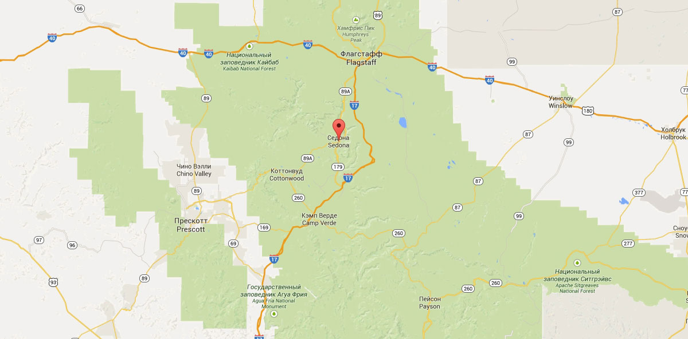

Поиск жилья в городе Седона

Особенности Седоны
Седона - небольшой городок в Аризоне, заслуживающий большего!
Рассмотрим 5 причин, по которым Седона круче, чем Гранд Каньон!
Настоящий городок
Седона — не аттракцион для туристов, там течёт своя жизнь
-
Жилье
Рекомендуем пожить в настоящем мотеле, всё как в кино!
-
Еда
Всегда заказывайте фирменный бургер, вы не разочаруетесь!
-
Сувениры
Не только китайского, но и местного производства!
Там есть мост дьявола
Да, по нему можно пройти! Если конечно вы осмелитесь
Небольшая площадь
Все достопримечательности находятся очень близко
Красивая дорога
Ехать в Седону из Лас-Вегаса совсем не скучно!
Мало туристов
Большинство едет в Гранд Каньон и толпится там
Заинтересовались?
Укажите предполагаемые даты поездки, и мы покажем вам лучшие предложения гостиниц в седоне
